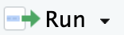
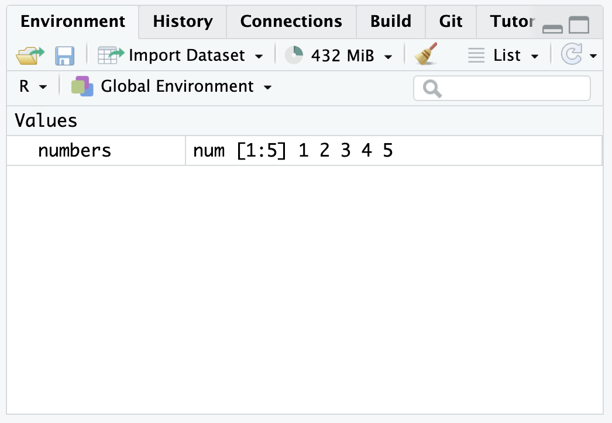
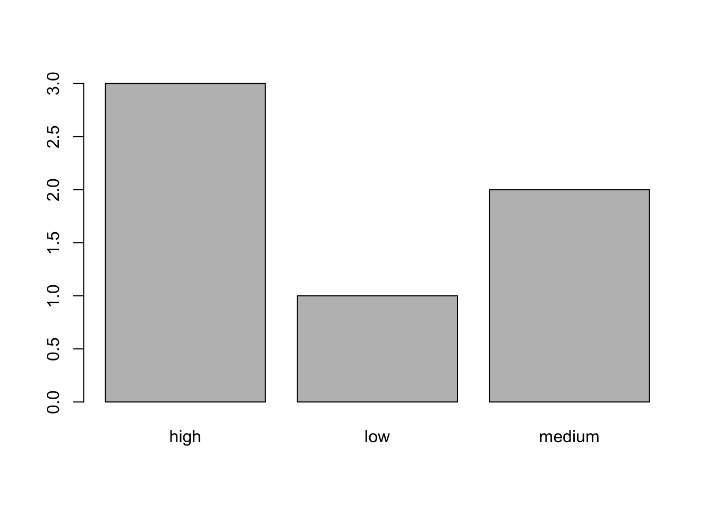
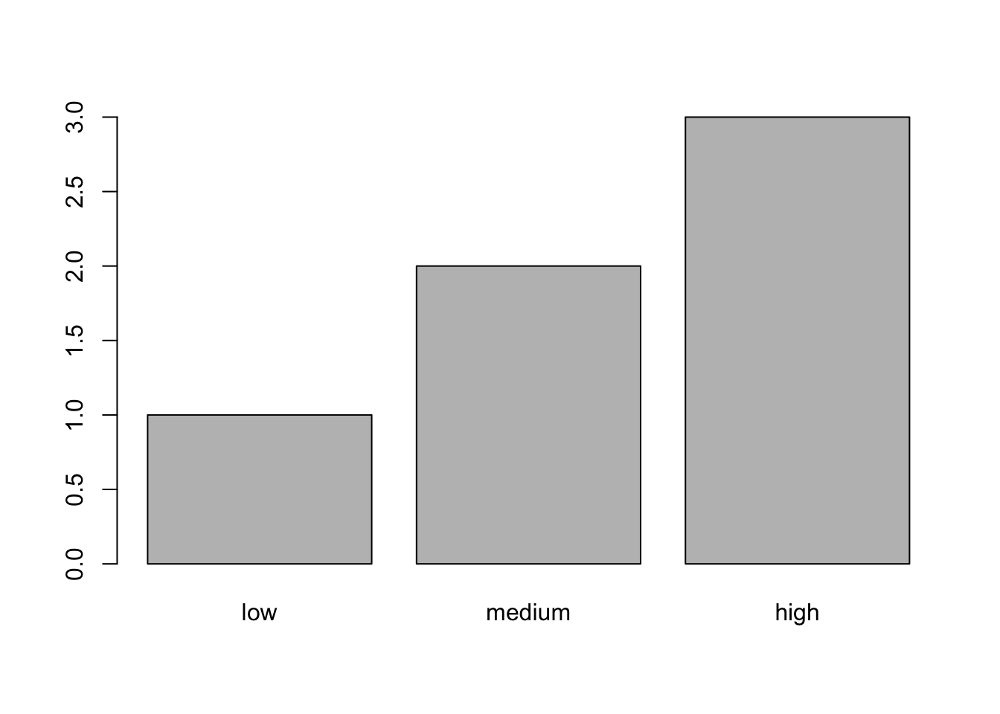

1 + 1[1] 2(-3)^2[1] 9# here's a comment. comments do not get executed even if they contain valid code
# 2 + 2
# write a sum of your own.
# run the code and make sure you get the answer you're expectingDownload this file to accompany this section:
After you save it, double click it and it should open in the Editor pane in RStudio.
Writing some code in an .R document does not cause it to be executed automatically. You need to run the code yourself. You can run a single line of code at a time, or a whole section, or an entire script.
One line at a time:
Run button at top-right of editor pane 
Command (or Ctrl) ⌘ Return ⏎ (advances cursor to next line)
Option (or Alt) ⌥ + Return ⏎ (does not advance cursor)
Whole script
Source (runs code, doesn’t show output)
Source with Echo (shows output)
To start getting used to writing and running code, let’s use R as a calculator to do some sums.
1 + 1[1] 2(-3)^2[1] 9# here's a comment. comments do not get executed even if they contain valid code
# 2 + 2
# write a sum of your own.
# run the code and make sure you get the answer you're expectingIn R, a vector is a collection of values of a single type of data. You can make one by using the c() function to collect things together.
# numeric
c(1, 2, 3, 4, 5)[1] 1 2 3 4 5# colon can be used to produce a vector of integers
1:5 [1] 1 2 3 4 55:1[1] 5 4 3 2 11 # is just a numeric vector of length 1[1] 1# character
c("hello", "world")[1] "hello" "world"# logical
c(TRUE, FALSE)[1] TRUE FALSER has a fancy assignment operator: <-.1
You assign things to a name by typing something like:
numbers <- c(1, 2, 3, 4, 5)Almost anything can be assigned to a name. In the example here the vector c(1, 2, 3, 4, 5) was assigned to the name numbers. But in other situations you might assign an entire dataset, a statistical model object, a function, or something else. Whatever it is you’re assigning, giving it a name allows to you perform subsequent operations more easily, and choosing appropriate names makes your code easier to understand.
The name can be almost anything you like; it just can’t start with a number or contain spaces or special characters other than _ (underscore) and . (period). It can have uppercase characters as well as lowercase, but note that when it comes time to use the name later you will need to type it exactly right, including capitalization. So you can make life a little easier for yourself by using a consistent naming convention, ideally avoiding capital letters altogether.
# valid name examples ✅
data <- "works"
good_name <- "fine"
.ValidName <- "works, watch out for the capitals"
long_name_for_a_variable <- "pixels are free, but time is limited"# invalid names ❌
1badname <- "won't work"
worse name <- "can't have spaces"
# backticks allow for otherwise unacceptable names
`1bad name` <- "will work"
When you run the code numbers <- c(1, 2, 3, 4, 5) or any other assignment operation, you generally won’t see any output in the console. What you will see, however, is something new appear in your Global Environment, the pane in the top-right of the RStudio window. You have brought your named object into being.
Just as easily as you can bring an object into existence, so too can you remove it. Clicking the charming little sweeping brush near the top of the Environment pane will remove everything that currently exists from your Environment. It’ll even ask if you’re sure–a rare instance of compassion on R’s part. It’s a good habit not to be precious about the objects in your Environment. Your code is the definite record and if the instructions to make something are in there it can always be recreated.
# removing objects from the Environment
rm(numbers) # remove a particular object by name
rm(list = ls()) # remove everything in the global environment
# or you can click the charming little sweeping brushNote that R will allow you to reuse a name that you already assigned something to. It will simply replace the thing that the name refers to. It will not ask if you’re sure you want to do that; it won’t mention it at all.
number <- 1
number * 2[1] 2number <- 2
number * 2[1] 4It is entirely possible for you to run lines of code out of order and get potentially confusing results as a consequence. You might also run a line of code more than once, modifying an object in a way that you might not intend.
number <- 1
number <- number * 2 # what if you run this a few times?
number[1] 2Many of the things we eventually want to do involve functions. To use a function, type its name, followed by parentheses. Any inputs or other arguments you need to specify go inside the parentheses.
sum(c(1, 2, 3, 4, 5)) # sum() takes a numeric vector as input[1] 15# use sum() to get the total of a vector of numbers of your own
# run the code and make sure you get the answer you're expectingMost usefully, we can use a named object we have created as input to a function. So rather than having to type or copy/paste the original vector c(1, 2, 3, 4, 5), we can give it a name and feed that name into a function that expects a numeric vector as input.
numbers <- c(1, 2, 3, 4, 5)
sum(numbers)[1] 15length(numbers)[1] 5mean(numbers)[1] 3sd(numbers)[1] 1.581139min(numbers)[1] 1max(numbers)[1] 5A function generally has one or more “arguments”, to which you supply parameters. For example, the mean() function’s first argument is the set of numbers you want to compute the mean of.
When there’s more than one argument, they are separated by a comma. Arguments usually have names. You don’t necessarily have to type the name of the argument, because of R’s positional matching.
The seq() function, for example, produces a sequence of numbers according to three arguments, from, to, and by.
seq(from = 1, to = 10, by = 2)[1] 1 3 5 7 9If you don’t type the names of the arguments, and just supply three values, R matches them by position, so this gives exactly the same output as the previous line of code because from, to, and by are the first three arguments respectively.
seq(1, 10, 2) # gives same result as above[1] 1 3 5 7 9Suppose we actually wanted a sequence of 6 values. We could use the length.out argument. Now we definitely have to type the name at least of the by and length.out arguments, because positional matching won’t work.
seq(from = 1, by = 2, length.out = 6) # argument names required[1] 1 3 5 7 9 11So when do you type the argument names explicitly? Definitely when you need to, and maybe when you don’t: remember someone (including your future self, might eventually want to read and understand your code.
You can also nest functions inside one another. Make sure all the closing parentheses match up.
sqrt(mean(seq(1, 10, 2)))[1] 2.236068Remember, you can get help with a function (to see what arguments it accepts, for example) by typing a question mark followed by the function name (without parentheses) in your console.
?meanRunning the code will bring up the function’s help documentation in RStudio’s Help pane.
You can access individual element of a vector by supplying an index within square brackets.
numbers <- c(3, 1, 4, 1, 5, 9)
numbers[1] # first element[1] 3numbers[1:3] # multiple consecutive elements[1] 3 1 4# can you pick out the 1st, 3rd, and 5th elements?Note that R uses 1-indexing: the first element’s index is 1. This differs from many other coding languages which are 0-indexed.
numbers <- c(1, 2, 3, 4, 5)
numbers * 2[1] 2 4 6 8 106 - numbers[1] 5 4 3 2 1numbers * c(1, 2)Warning in numbers * c(1, 2): longer object length is not a multiple of shorter
object length[1] 1 4 3 8 5numbers * numbers[1] 1 4 9 16 25sd(numbers) / length(numbers) # standard error[1] 0.3162278numbers - mean(numbers) # deviations[1] -2 -1 0 1 2(numbers - mean(numbers))^2 # squared deviations[1] 4 1 0 1 4# can you compute the sum of squared deviations?numbers <- c(1, 2, 3, 4, 5, 3)
3 == numbers[1] FALSE FALSE TRUE FALSE FALSE TRUE3 != numbers[1] TRUE TRUE FALSE TRUE TRUE FALSE# check if a value is in a vector at least once
3 %in% numbers[1] TRUE6 %in% numbers[1] FALSE# check if something is FALSE
!6 %in% numbers[1] TRUE3 >= numbers[1] TRUE TRUE TRUE FALSE FALSE TRUEnumbers[numbers > 3][1] 4 5Every element in a vector must be of the same type (numeric, character, logical). If that is not the case, R will coerce the data into a single type.
numbers <- c(1, 2, 3, 4, 5)
numbers[1] 1 2 3 4 5numbers <- c(1, 2, "three", 4, 5)
numbers [1] "1" "2" "three" "4" "5" numbers <- c(1, 2, "3", 4, 5)
numbers[1] "1" "2" "3" "4" "5"mean(numbers)Warning in mean.default(numbers): argument is not numeric or logical: returning
NA[1] NACoercion can have some confusing consequences, if you are taken unawares by mixed data types.
1 < "2"[1] TRUE22 < "11"[1] FALSE3 > "two"[1] FALSE# why?Coercion can have some happy consequences. For instance, logical values (TRUE and FALSE) can be coerced into the numbers 1 and 0. A function that requires numeric input, such as sum() or mean(), if given logical input, will coerce the vector to numeric.
# doing math with logicals
bool <- c(TRUE, FALSE, FALSE, TRUE)
bool [1] TRUE FALSE FALSE TRUEas.numeric(bool)[1] 1 0 0 1sum(bool) # count of TRUEs[1] 2mean(bool) # proportion of TRUEs[1] 0.5A factor is a special data type in R used to represent categorical data. Internally, it stores the data as integers, but each unique integer is associated with a text label (the level) for that category.
data <- c("female", "male", "male", "female")
data_factor <- factor(data)
data_factor[1] female male male female
Levels: female maleas.numeric(data_factor)[1] 1 2 2 1Perhaps our raw data coded a variable like this as numeric to begin with, and we want to add the category labels ourselves.
data <- c(1, 2, 2, 1) # gender coded numerically
factor(data, levels = c(1, 2), labels = c("female", "male"))[1] female male male female
Levels: female maleFor ordinal data, where the order of categories matters, we can specify the levels in order and use the ordered = TRUE argument.
# with no order specified; levels are listed alphabetically
data <- c("medium", "low", "high", "medium", "high", "high")
unordered <- factor(data)
plot(unordered)
ordered <- factor(data,
levels = c("low", "medium", "high"),
ordered = TRUE)
Note that this does not affect the raw data, but it means that if we plot a graph using this ordered factor later on, the values will appear in their correct, meaningful order, rather than just the default alphabetical order.
To anticipate a problem we often run into when working with real data, sometimes our data includes missing values. R has a special representation for missing values: NA.
numbers <- c(1, 2, NA, 4, 5)
mean(numbers)[1] NA# can you solve the problem by looking at the help page for the mean function?So far we’ve been working with individual vectors. Sooner of later we’re going to want to work with a collection of different sets of numbers: a spreadsheet. R’s name for this kind of data structure is a data.frame. A data.frame is a collection of vectors; each column is a vector. Different columns can have different types (numeric, character, logical, date, etc), but each column will contain a single type of data. All columns must have the same length.
Most commonly we have a data file already (a .csv or maybe an Excel file or some other format) and we read it in to R. However, to get a sense of how these objects work, and how to work with them, we can make one from scratch.
df <- data.frame(a = c(1, 2, 3),
b = c("one", "two", "three"),
c = c(1, 2, "3"),
d = c(1, 2, NA),
e = c(TRUE, FALSE, FALSE),
f = factor(c("female", "female", "male")))
str(df)'data.frame': 3 obs. of 6 variables:
$ a: num 1 2 3
$ b: chr "one" "two" "three"
$ c: chr "1" "2" "3"
$ d: num 1 2 NA
$ e: logi TRUE FALSE FALSE
$ f: Factor w/ 2 levels "female","male": 1 1 2# get a quick summary of each column
summary(df) a b c d
Min. :1.0 Length:3 Length:3 Min. :1.00
1st Qu.:1.5 Class :character Class :character 1st Qu.:1.25
Median :2.0 Mode :character Mode :character Median :1.50
Mean :2.0 Mean :1.50
3rd Qu.:2.5 3rd Qu.:1.75
Max. :3.0 Max. :2.00
NA's :1
e f
Mode :logical female:2
FALSE:2 male :1
TRUE :1
R has many ways of picking out particular columns, rows, and individual values from a data.frame. The most useful is the $ dollar sign for referring to a column by name. The data.frame we just created has a column named “a”, so we can access the single vector that makes up that column by typing:
df$a[1] 1 2 3Then we can use all the functions, mathematical operations and everything else we’ve learned about so far to start working with the columns of our data.frame.
# remember, a data.frame column is a vector like any other
df$a * 2[1] 2 4 6mean(df$a)[1] 2table(df$f)
female male
2 1 Most other coding languages tend to use a boring = for assignment. Sure it’s nice not having to type an extra character, but there’s a keyboard shortcut to quickly add an <- in RStudio: Option/Alt + -. And philosophically, the <- arrow conveys the inherent directionality of the assignment operation. The object is assigned to the name; the object and its name are not equal and so the = arguably gives a misleading impression of the two things being one and the same. (Also, to let you in on a secret, = also works for assignment in R.)↩︎